Candidates
Dips in starlight, waiting for your eye.
Demo data
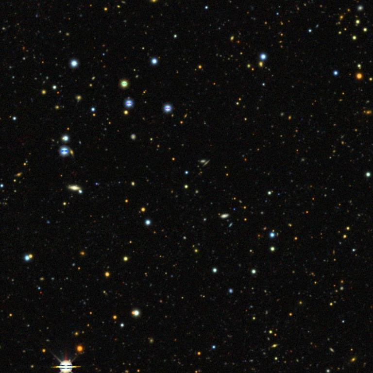
TIC 219345170
3.81 d · 4.4 R⊕ · priority 0.90
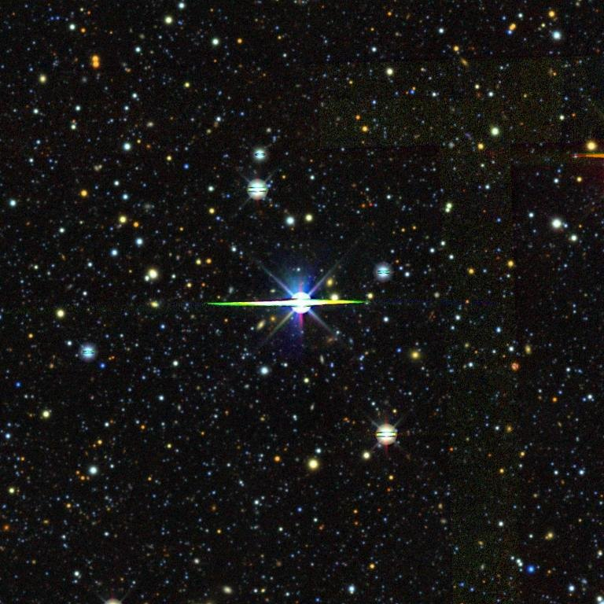
TIC 29781292
0.78 d · 1.8 R⊕ · priority 0.86
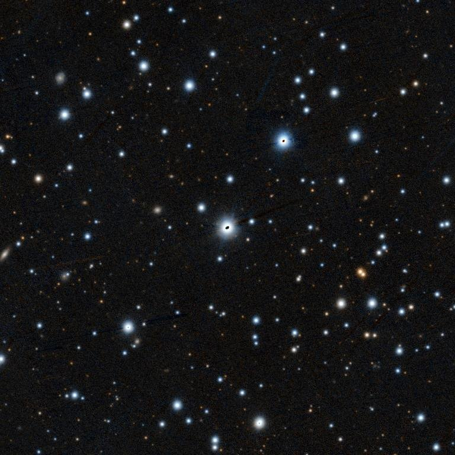
TOI-564
11.21 d · 2.9 R⊕ · priority 0.84
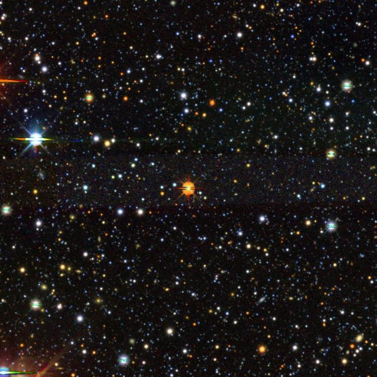
TIC 150428135
17.94 d · 5.2 R⊕ · priority 0.83
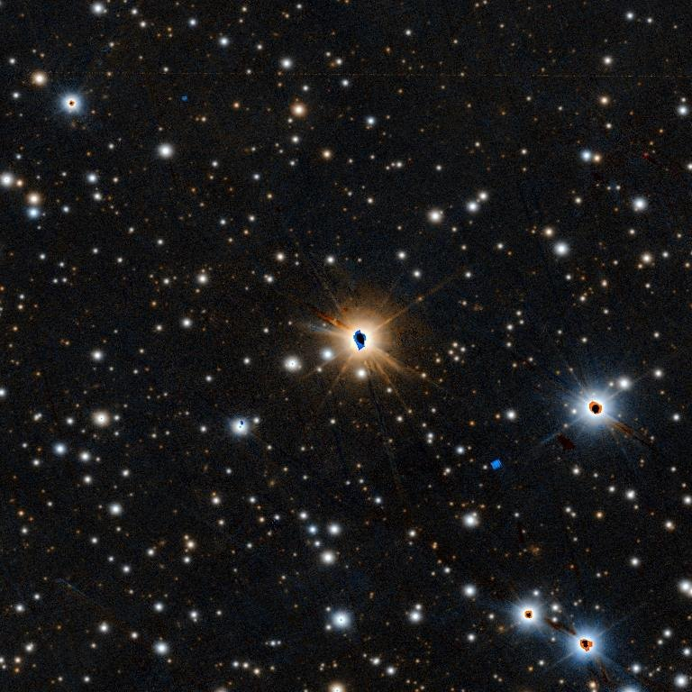
TIC 307809773
1.64 d · 1.3 R⊕ · priority 0.81
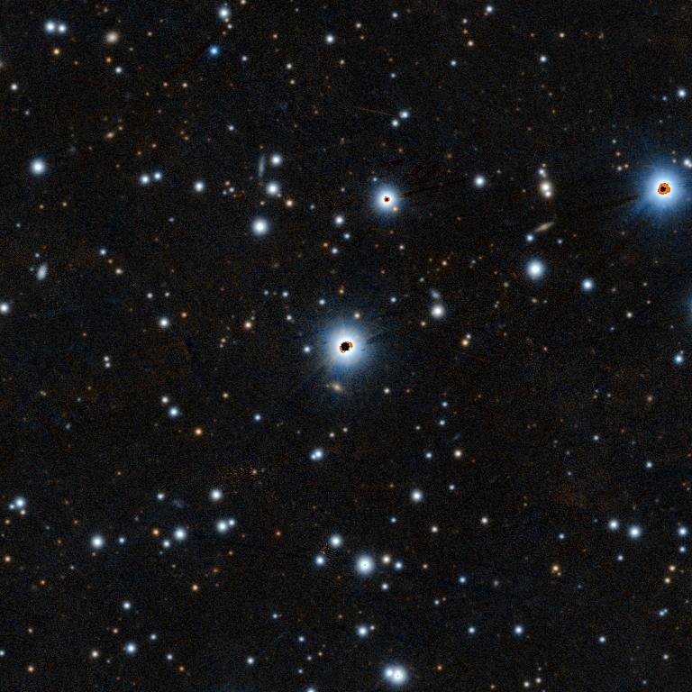
TIC 88863718
2.22 d · 8.5 R⊕ · priority 0.80
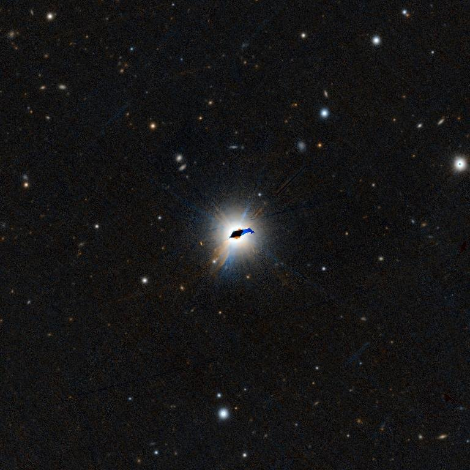
TIC 441462736
2.79 d · 1.6 R⊕ · priority 0.78
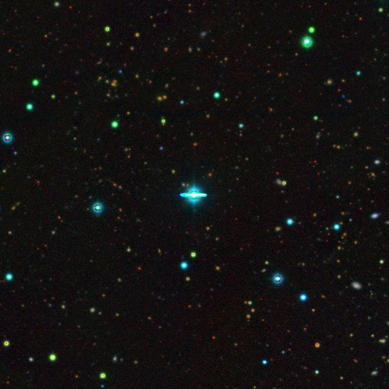
TIC 257060897
7.34 d · 3.0 R⊕ · priority 0.74
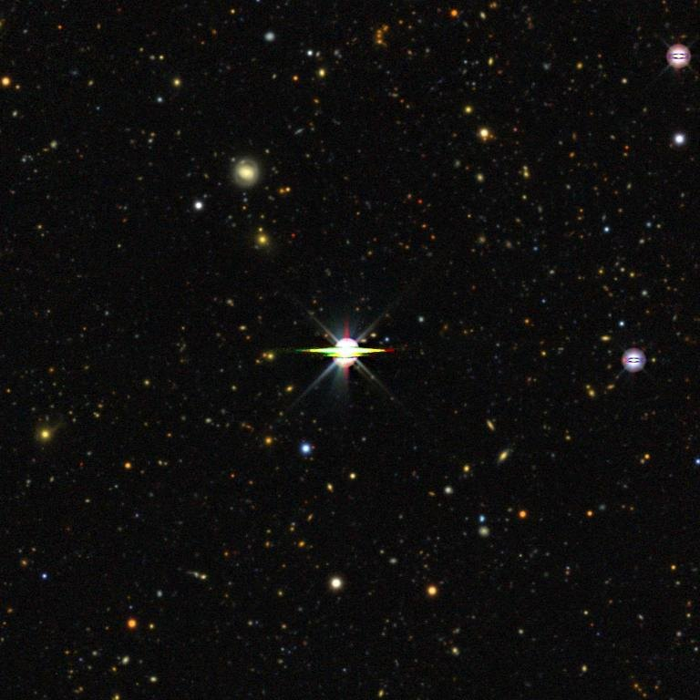
WASP-77 A
5.73 d · 1.7 R⊕ · priority 0.74
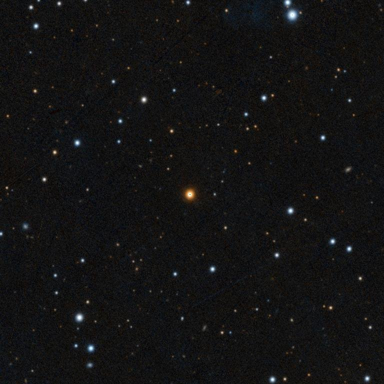
TIC 459837008
6.04 d · 9.6 R⊕ · priority 0.72
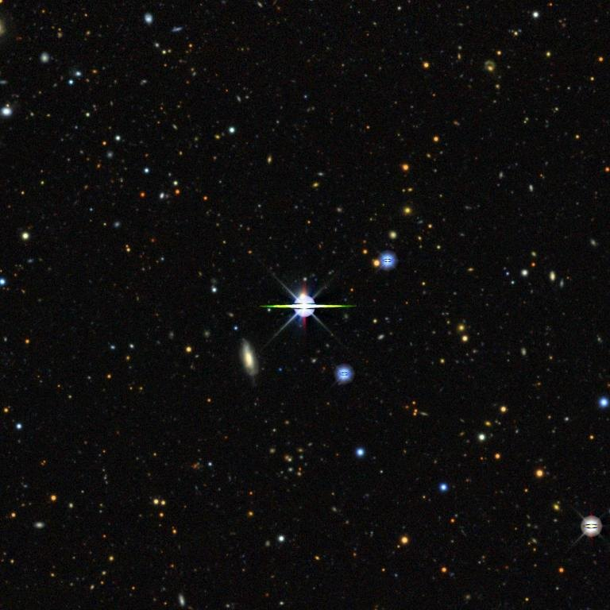
TOI-2447
8.88 d · 2.9 R⊕ · priority 0.71
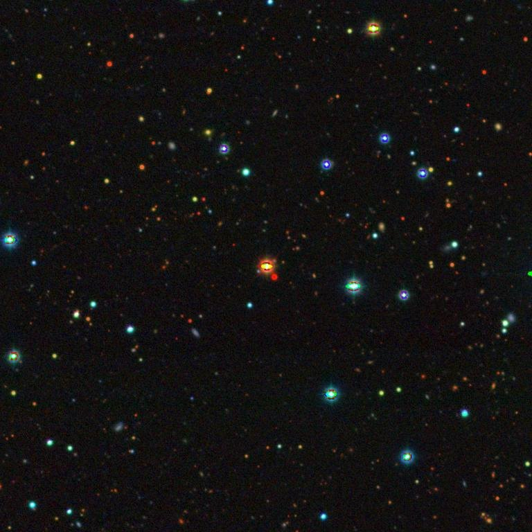
TIC 356016119
9.14 d · 8.8 R⊕ · priority 0.69
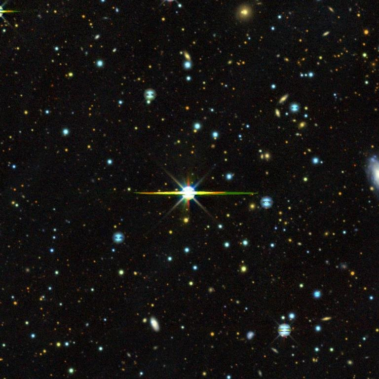
TIC 278683844
4.45 d · 5.5 R⊕ · priority 0.53
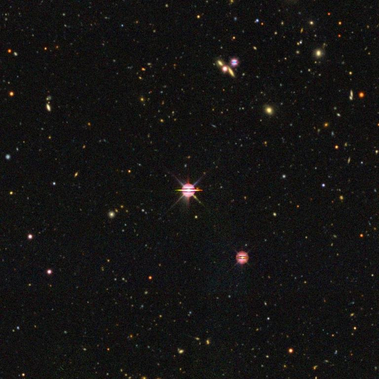
TIC 393831507
3.09 d · 14.6 R⊕ · priority 0.53
What the search can findSensitivity
Which planet sizes and orbits the search recovers, from planets we hid in real light curves.
What a candidate isAbout
A repeating dip that passed our checks and is on none of the lists we compared. None is a planet yet.